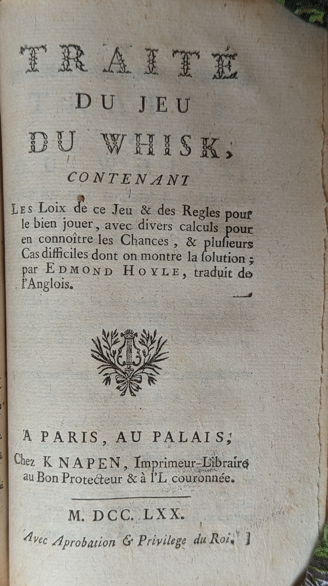

A Descriptive Bibliography of Edmond Hoyle
Copyright © 2014-26 by David Levy
(page updated 2026-03-24)User Guide
Knapen.Whist.Fr.1770
Traité du Jeu du Whisk, Chez Knapen, 1770.
 |
Title: | TRAITÉ | DU JEU | DU WHISK, | CONTENANT | Les Loix de ce Jeu & des Regles pour | le bien jouer, avec divers calculs pour | en connoître les Chances, & pluʃieurs | Cas difficiles dont on montre la ʃolution; | par Edmond Hoyle, traduit de | l'Anglois. | [tailpiece] | A PARIS, AU PALAIS, | Chez KNAPEN, Imprimeur-Libraire | au Bon Protecteur & à l"L couronnée. | [short rule] | M. DCC. LXX. | Avec Aprobation & Privilege du Roi. |
| Collation: | 8o: π1 A–G4 H2 [$½ (+A1) signed]; 31 leaves, pp. [2 ] 1–60 |
| Contents: | Signature (Page) Reference | Contents | Signature (Page) Reference | Running Titles |
| π1r | title | |||
| π1v | blank | |||
| A1r–H2v (1–60) | ‘[headpiece] | TRAITÉ | DU JEU | DU WHISK, | [...]’ | A1v–H2r (2–59) | ‘TRAITÉ | DU JEU DU WHISK.’ | |
| H2v (60) | ‘TRAITÉ &c’ |
| Publisher: | Chez Knapen |
| References: | Depaulis 104*** |
| Copies Seen: | Levy [1788]; Levy [2210] |
| Notes: | This is likely most often found as a second part of Académie Universelle des Jeux, but Levy [2210] is only the whist translation, stitched, as issued. In that copy, gathering E is missigned 'D' and pages 57 and 58 are misnumbered 75 and 85. There is another versions dated 1765. I have seen photographs of a few openings only and it appears to be in part the same setting of type, but for some pages different type. |